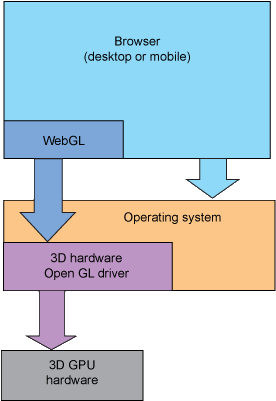

Three.js
Un moteur 3D Javascript
Three.js
-
librairie open source facilitant l'utilisation de WebGL
github.com/mrdoob/three.js
-
créée en 2010 par Ricardo Cabello

-
8000 commits, 59 releases, 300 contributors
WebGL ?
http://fr.wikipedia.org/wiki/WebGL
« WebGL est une [API]
Elle permet d'utiliser, en JavaScript, au sein d'une page HTML5,
OpenGL ES, en s'aidant de l'accélération matérielle pour les calculs et le rendu 3D
et du processeur graphique »

Vocabulaire
Une scène

OK mais concrètement ?
-
On manipule des tableaux de points 3D et de faces
var vertices = [ // X Y Z -1.0, -1.0, 1.0, 1.0, -1.0, 1.0, 1.0, 1.0, 1.0, -1.0, 1.0, 1.0, -
On récupère un contexte WebGL, et
via des méthodes très similaires à OpenGL,
on place des objets en transformant des matrices
gl = canvas.getContext('experimental-webgl'); mvPushMatrix(); mvRotate(cubeRotation, [1, 0, 1]); mvTranslate([cubeXOffset, cubeYOffset, cubeZOffset]);
Exemple, pour un cube
// Initialize WebGL, returning the GL context
gl = canvas.getContext("experimental-webgl");
// Create a buffer for the cube's vertices.
cubeVerticesBuffer = gl.createBuffer();
// Select the cubeVerticesBuffer as the one to apply vertex
// operations to from here out.
gl.bindBuffer(gl.ARRAY_BUFFER, cubeVerticesBuffer);
// Now create an array of vertices for the cube.
var vertices = [
// Front face
-1.0, -1.0, 1.0,
1.0, -1.0, 1.0,
1.0, 1.0, 1.0,
-1.0, 1.0, 1.0,
// Back face
-1.0, -1.0, -1.0,
-1.0, 1.0, -1.0,
1.0, 1.0, -1.0,
1.0, -1.0, -1.0,
// Top face
-1.0, 1.0, -1.0,
-1.0, 1.0, 1.0,
1.0, 1.0, 1.0,
1.0, 1.0, -1.0,
// Bottom face
-1.0, -1.0, -1.0,
1.0, -1.0, -1.0,
1.0, -1.0, 1.0,
-1.0, -1.0, 1.0,
// Right face
1.0, -1.0, -1.0,
1.0, 1.0, -1.0,
1.0, 1.0, 1.0,
1.0, -1.0, 1.0,
// Left face
-1.0, -1.0, -1.0,
-1.0, -1.0, 1.0,
-1.0, 1.0, 1.0,
-1.0, 1.0, -1.0
];
// Now pass the list of vertices into WebGL to build the shape. We
// do this by creating a Float32Array from the JavaScript array,
// then use it to fill the current vertex buffer.
gl.bufferData(gl.ARRAY_BUFFER, new Float32Array(vertices), gl.STATIC_DRAW);
// Now set up the colors for the faces. We'll use solid colors
// for each face.
var colors = [
[1.0, 1.0, 1.0, 1.0], // Front face: white
[1.0, 0.0, 0.0, 1.0], // Back face: red
[0.0, 1.0, 0.0, 1.0], // Top face: green
[0.0, 0.0, 1.0, 1.0], // Bottom face: blue
[1.0, 1.0, 0.0, 1.0], // Right face: yellow
[1.0, 0.0, 1.0, 1.0] // Left face: purple
];
// Convert the array of colors into a table for all the vertices.
var generatedColors = [];
for (j=0; j<6; j++) {
var c = colors[j];
// Repeat each color four times for the four vertices of the face
for (var i=0; i<4; i++) {
generatedColors = generatedColors.concat(c);
}
}
cubeVerticesColorBuffer = gl.createBuffer();
gl.bindBuffer(gl.ARRAY_BUFFER, cubeVerticesColorBuffer);
gl.bufferData(gl.ARRAY_BUFFER, new Float32Array(generatedColors), gl.STATIC_DRAW);
// Build the element array buffer; this specifies the indices
// into the vertex array for each face vertices.
cubeVerticesIndexBuffer = gl.createBuffer();
gl.bindBuffer(gl.ELEMENT_ARRAY_BUFFER, cubeVerticesIndexBuffer);
// This array defines each face as two triangles, using the
// indices into the vertex array to specify each triangle
// position.
var cubeVertexIndices = [
0, 1, 2, 0, 2, 3, // front
4, 5, 6, 4, 6, 7, // back
8, 9, 10, 8, 10, 11, // top
12, 13, 14, 12, 14, 15, // bottom
16, 17, 18, 16, 18, 19, // right
20, 21, 22, 20, 22, 23 // left
]
// Now send the element array to GL
gl.bufferData(gl.ELEMENT_ARRAY_BUFFER,
new Uint16Array(cubeVertexIndices), gl.STATIC_DRAW);
}
//
// drawScene
//
// Draw the scene.
//
function drawScene() {
// Clear the canvas before we start drawing on it.
gl.clear(gl.COLOR_BUFFER_BIT | gl.DEPTH_BUFFER_BIT);
// Establish the perspective with which we want to view the
// scene. Our field of view is 45 degrees, with a width/height
// ratio of 640:480, and we only want to see objects between 0.1 units
// and 100 units away from the camera.
perspectiveMatrix = makePerspective(45, 640.0/480.0, 0.1, 100.0);
// Set the drawing position to the "identity" point, which is
// the center of the scene.
loadIdentity();
// Now move the drawing position a bit to where we want to start
// drawing the cube.
mvTranslate([-0.0, 0.0, -6.0]);
// Save the current matrix, then rotate before we draw.
mvPushMatrix();
mvRotate(cubeRotation, [1, 0, 1]);
mvTranslate([cubeXOffset, cubeYOffset, cubeZOffset]);
// Draw the cube by binding the array buffer to the cube vertices
// array, setting attributes, and pushing it to GL.
gl.bindBuffer(gl.ARRAY_BUFFER, cubeVerticesBuffer);
gl.vertexAttribPointer(vertexPositionAttribute, 3, gl.FLOAT, false, 0, 0);
// Set the colors attribute for the vertices.
gl.bindBuffer(gl.ARRAY_BUFFER, cubeVerticesColorBuffer);
gl.vertexAttribPointer(vertexColorAttribute, 4, gl.FLOAT, false, 0, 0);
// Draw the cube.
gl.bindBuffer(gl.ELEMENT_ARRAY_BUFFER, cubeVerticesIndexBuffer);
setMatrixUniforms();
gl.drawElements(gl.TRIANGLES, 36, gl.UNSIGNED_SHORT, 0);
// Restore the original matrix
mvPopMatrix();
What do we want ?
Object oriented 3D !
and particules !
and awesomeness !
How do we want ?
Super easy ! and readable !
De la 3D dans le browser
Three.js, ça marche vraiment ?
-
Chrome Experiments
Visualisations, proofs-of-concept, jeux, etc..
-
Création artistique / marketting / publicité
Arcade Fire Reflektor
Warner Gravity, The Hobbit
Disney Magicien d'Oz
Nike
-
Éditeurs 3D en ligne
Clara.io et Verold
-
200+ examples spécifiques fournis
~ tests unitaires, à utiliser comme bases de travail
En scène (3D) !
- une scène, une camera, un cube
var scene = new THREE.Scene() var camera = new THREE.PerspectiveCamera(45, w/h, 1, 1000) camera.position.z = 300 // vers vous var cube = new THREE.Mesh( new THREE.CubeGeometry(50, 50, 50), new THREE.MeshBasicMaterial({ color: 0x000 }) ) scene.add(cube) - le renderer utilise un <canvas>
var renderer = new THREE.WebGLRenderer() document.body.appendChild(renderer.domElement); - le renderer expose la scene dans un <canvas>
renderer.render(scene, camera)
HOÔoo
- déplaçons un peu la caméra
camera.position.z = 300; // toujours vers vous camera.position.y = 60; // mais un peu plus haut
- utilisons le MeshNormalMaterial, qui affecte aux faces une couleur en fonction de l'angle avec lequel la lumière arrive dessus
var cube = new THREE.Mesh( new THREE.CubeGeometry(50,50,50), new THREE.MeshNormalMaterial() ); cube.geometry.computeFaceNormals();
- déplaçons un peu le cube
cube.rotation.y = 45 * Math.PI / 180;
HOÔoo
C'est bien joli, mais ..
On veut que ça bouge !
- requestAnimationFrame(animate)
-
function animate(t) { camera.position.set( Math.sin(t / 1000) * 300, // X 150, // Y Math.cos(t / 1000) * 300 // Z ) renderer.render(scene, camera) requestAnimationFrame(animate) }
ex 2
Pas la caméra, la scène !
-
function animate(t) { cube1.position.set( Math.sin(t / 1000) * 200, 150, Math.cos(t / 1000) * 200 ) cube2.rotation.y = Math.sin(t/1000) renderer.render(scene, camera) requestAnimationFrame(animate) }
ex 2.2
Hiérarchie d'objets
Pour déplacer des ensembles
var group = new THREE.Object3D()
var cube1 = new THREE.Mesh(..)
cube.rotation.y
= 45 * Math.PI / 180
var cube2 = new THREE.Mesh(..)
cube2.position.y = 50
group.add(cube1)
group.add(cube2)
scene.add(group)
// group.position
// group.rotation
// group.scale
ex 2.2.5
Créons des THREE.Objet3D
-
Héritage par prototype typique
function Personne (prenom, nom) { THREE.Object3D.apply(this) this.prenom = prenom this.nom = nom } Personne.prototype = Object.create(THREE.Object3D.prototype)
-
Manipulation
var bernie = new Personne('bernie', 'noël') bernie.add(new Pelle()) scene.add(bernie) bernie instanceof Personne === true
Prêts ? Chargez !
-
Des images
var texture = new THREE.Texture() var loader = new THREE.ImageLoader(manager) loader.load('ma_texture.jpg', function (image) { texture.image = image })
-
Des fichiers 3D .obj , .stl , .fbx , ...
var loader = new THREE.OBJLoader(manager) loader.load('mon_fichier.obj', function (object) { scene.add(object) })
Créons un objet 3D
ex 2.3
Attention, chérie, ça va lagguer...
ex 3Bac à sable
ex 3.3
Pour aller plus loin
-
Shaders
- Fragments de code OpenGL exécutés par le GPU
- Permet de définir la couleur de chaque pixel d'un objet
- Bien plus rapide que les textures par images
-
EffectComposer
- Permet d'ajouter des effets sur le rendu
- Effets graphiques (flous, couleurs, ..)
- Posibilité d'enchainer les effets
- Souvent très consommateur de ressources
- Physijs un moteur physique pour Three.js
- Threex éléments de jeu
- stemkoski.github.io d'autres exemples
THE END
Retrouvez cette présentation sur Github
http://vincent.github.io/three-prez